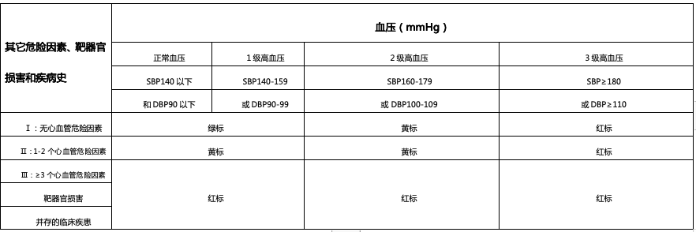
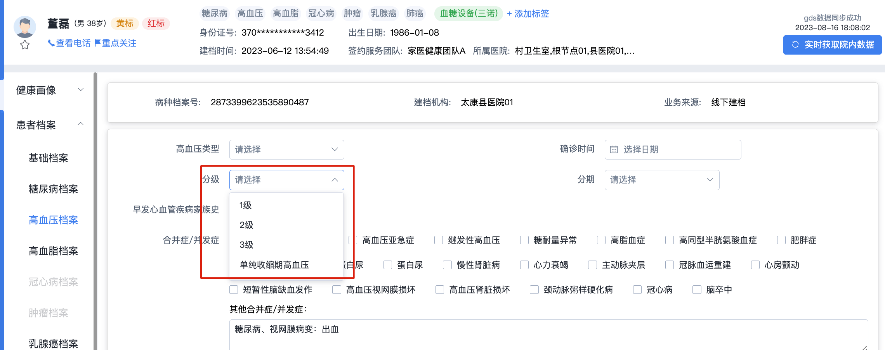
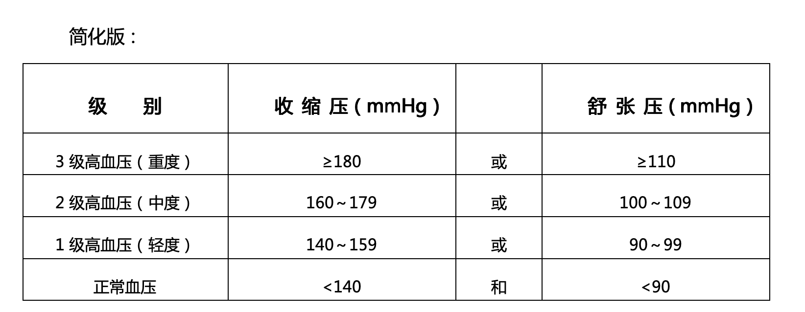
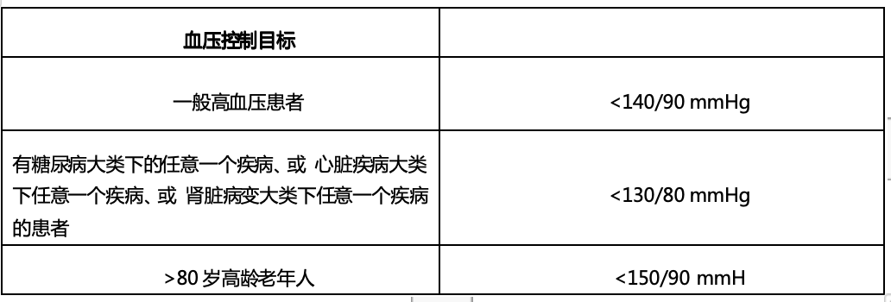
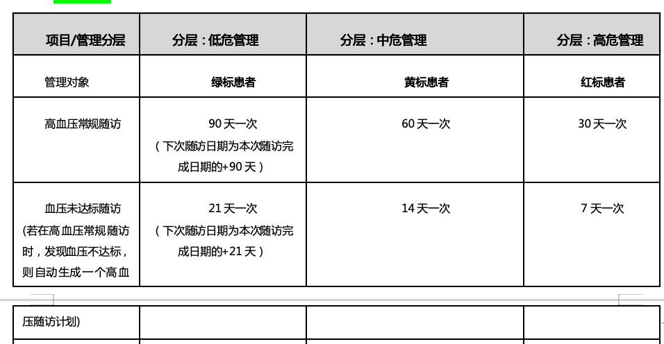
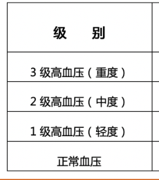

高血压
【分级】1级高血压
【分标】黄标
【分层】中危层
分级：
1、高血压专档已建立的患者，才会进行高血压分级；没有高血压专病档案，就不会有高血压分级分标分层；
2、分级时机：凌晨0点跑分级引擎时，根据当前最新一条的收缩压和最新一条舒张压判断；
第一步：数风险因素：
1、数出“危险因素数量”，得出A
2、数出“靶器官损害”的符合的条件数量，得出B
3、数出“并存的临床疾患”的符合的条件数量，得出C
第二步，根据高血压分级情况，做分标
1、正常血压，或是 1级高血压的情况下：
C>0 定为高危层
若C=0，则判断B：
B>0 定为高危层
若B=0，则判断A：
A为0个=低危层
A为1~2个=中危层
A为≥3个=高危层
2、2级高血压的情况下：
C>0 定为高危层
若C=0，则判断B：
B>0 定为高危层
若B=0，则判断A：
0个=中危层
1~2个=中危层
≥3个=高危层
3、3级高血压的情况下：
C>0 高危层
若C=0，则判断B：
B>0 高危层
若B=0，则判断A：
0个=高危层
1~2个=高危层
≥3个=高危层

#1
调整为不可修改，由系统判断：
分级：高血压1级
分级：未分级（每日凌晨自动分级）

每日凌晨根据最新一条收缩压/舒张压自动分级
每日凌晨根据最新一条收缩压/舒张压自动分级
新建档患者会为未分级状态，展示：
分级规则：
从高级往低级看：
收缩压和舒张压，其中任意一个指标，命中了高级的，那就是高级的；

分级规则
高血压
分标规则
“数风险因素”
如何“数风险因素”
【情形1】根据当前分层情况，生效对应的管理方案：
1、绿标，对应“分层：低危管理”
以本次分标时间为T，+90天，生成一个高血压常规随访任务（开始时间为T+90天）；
2、黄标，对应“分层：中危管理”
以本次分标时间为T，+60天，生成一个高血压常规随访任务（开始时间为T+60天）；
3、红标，对应“分层：高危管理”
以本次分标时间为T，+30天，生成一个高血压常规随访任务（开始时间为T+30天）；
【情形2】若患者当前有分层，患者发生了变标变层，则：
由于老的管理方案，还在生效中（即有一个未完成的高血压常规随访），则需要判断：
- 最近一次高血压随访计划日期 早于/等于 变标后的预计随访计划日期，则随访计划保持不变
- 最近一次高血压随访计划日期 晚于 变标后的预计随访计划日期，取消该随访计划，生效该预计随访计划
变标意味着管理方案发生变化：
高转低：红标患者标成了黄标，此时分层管理方案，变化至“分层：中危管理”
低转高：黄标患者标成了红标，此时分层管理方案，变化至“分层：高危管理”
高血压常规随访完成，需要进行判断：
随访的时候，必须在随访表内记录【血压】，系统按照该值做判断：
A.该次随访血压未达标：则再度生成一个随访计划（高血压常规随访），根据用户当前分层，判断该随访计划的时间：
1、“分层：低危管理”的患者
- 以本次随访完成日期为T，+21天，生成一个高血压常规随访任务（开始时间为T+21天）；
2、“分层：中危管理”的患者
- 以本次随访完成日期为T，+14天，生成一个高血压常规随访任务（开始时间为T+14天）；
3、“分层：高危管理”的患者
- 以本次随访完成日期为T，+7天，生成一个高血压常规随访任务（开始时间为T+7天）；
B.该次随访血压达标：则不额外产生随访计划。按照该血压结果，根据分层生成下一个“高血压常规随访”任务
即又进入了观察期
即进入了高频监控期
开始
常规随访
该观察期随访频率低；
患者在该周期内，进行血压上传；
如果血压变高（分标变高）则会拉近高血压常规随访日期；
“观察期”
常规随访.........
“高频监控期”
根据本次随访中登记的血压，判断是否要进入到“高频监控期”以及频率，直到正常
血压满足【达标】
正常后，重新进入观察期
本次随访中登记的血压达标
达标的判断方式：

图解：
💡本套管理方案的特点：
1、确诊患者，进来后有一段观察期：
2、每次常规随访都会判断出是否要高频的监控
3、监控期的目的，是为了让患者的血压正常，重新进入观察期；
目前分析下来，这个管理方案的工作强度适中，由松到紧、工作强度适中（对高危人群会有较大的投入，解决之道是让患者尽量早点血压达标；）
分层管理规则
如何“数风险因素”

低危层
中危层
高危层
！！新分标规则

红标
黄标
绿标
调整点1
调整点2
分层规则
仅判断结果名称由分标变为分层，判断逻辑不变
分层管理的标准仅以“层”为核心，不考虑标的情况，每层对应的管理规则不变
高危层
中危层
低危层
高危层
高危层
中危层
中危层
高危层
高危层
标与层完全解耦了，
不需要再考虑变标的逻辑
去除该部分逻辑判断
分层时间
分层时间
分层时间
患者变层
变层
分层变高